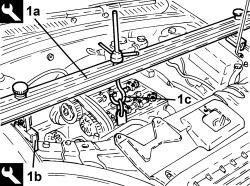
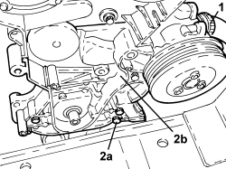

1020D10 FRONT CRANKSHAFT OIL SEAL COVER - R + R AND REPLACE SEALS WITH TIMING BELT REMOVED
- Path
- Procedures > 10 ENGINE > 1020 CRANKCASE SUMP AND COVERS > 1020D OIL SEALS ON CRANKSHAFT > 1020D10 FRONT CRANKSHAFT OIL SEAL COVER - R + R AND REPLACE SEALS WITH TIMING BELT REMOVED
- Kind
- repair procedure (removal / refitting; the operation number is the code)
- Applies to
- engines: 1.8; all production periods
- Interactive page
- https://sloeber94.github.io/elrnDB-fCrm/en/#/194003011
Applies to: engines: 1.8; all production periods
 Removing
Removing
 Refitting
RefittingOp. 0010T20 ENGINE COOLANT - CHANGE
Op. 0010T11 ENGINE OIL - CHECK LEVEL AND TOP UP, IF NECESSARY
Op. 1076B18 RIGID SECTION OF EXHAUST PIPE BETWEEN CATALYTIC CONVERTER AND SILENCER - R + R
Op. 1084A16 OIL DIPSTICK PIPE - R.R
Op. 7055B66 ENGINE COMPARTMENT DUST COVER IN RIGHT FRONT WHEEL ARCH - R.R.
Op. 1020A20 CRANKCASE OIL SUMP - R.R CLEAN SURFACES FOR SEALANT APPLICATION
Op. 5040A20 AIR CONDITIONING COMPRESSOR - R+R - INCLUDES FLUID LEVEL CHECK AND TOP UP IF NECESSARY
Op. 1032C10 TIMING SYSTEM MOVING TENSIONER - R.R WITH TIMING BELT/CHAIN REMOVED
Op. 1032B46 TOOTHED DRIVE PULLEY - R + R
1. Fit the tool (1a) complete with support mountings (1b), and connect it to the bracket on the engine using the rod (1c).
Tool | Description | Function | Validity |
|---|---|---|---|
1820581000 | Crossmember | Power unit support | 1.8 2.2 |
Tool | Description | Function | Validity |
|---|---|---|---|
1870650000 | Support blocks | Power unit support | 1.8 2.2 |

Applies to: engines: 1.8; all production periods
- Remove the timing side rigid power unit support, refer to
Op. 1008A46 POWER UNIT RIGID SUPPORT - TIMING SIDE - R.R.
1. Loosen the band and disconnect the water pump inlet hose.
2. Undo the bolts (2a) and remove the crankshaft oil seal front cover (2b) complete with water pump and engine oil pump.
- Remove the gasket.

Applies to: engines: 1.8; all production periods
Refitting
Removing- Fit a new gasket on the crankshaft oil seal front cover.
- Place the crankshaft front cover in its seat complete with water pump and engine oil pump and tighten the bolts to the recommended torque.
Component | Fastening | dia | Value (daNm) | Validity |
|---|---|---|---|---|
Crankshaft oil seal front cover | Bolt | - | 2.0 | 1.8 |
- Connect the inlet hose to the water pump and tighten the band.
- Place the timing side rigid power unit support in position, refer to
Op. 1008A46 POWER UNIT RIGID SUPPORT - TIMING SIDE - R.R.
- Remove the tools used for supporting the engine.
Op. 1032B46 TOOTHED DRIVE PULLEY - R + R
Op. 1032C10 TIMING SYSTEM MOVING TENSIONER - R.R WITH TIMING BELT/CHAIN REMOVED
Op. 5040A20 AIR CONDITIONING COMPRESSOR - R+R - INCLUDES FLUID LEVEL CHECK AND TOP UP IF NECESSARY
Op. 1020A20 CRANKCASE OIL SUMP - R.R CLEAN SURFACES FOR SEALANT APPLICATION
Op. 7055B66 ENGINE COMPARTMENT DUST COVER IN RIGHT FRONT WHEEL ARCH - R.R.
Op. 1084A16 OIL DIPSTICK PIPE - R.R
Op. 1076B18 RIGID SECTION OF EXHAUST PIPE BETWEEN CATALYTIC CONVERTER AND SILENCER - R + R
Op. 0010T11 ENGINE OIL - CHECK LEVEL AND TOP UP, IF NECESSARY
Topics linked from this page (11)
- 0010T11 ENGINE OIL - CHECK LEVEL AND TOP UP, IF NECESSARY
- 0010T20 ENGINE COOLANT - CHANGE
- 1008A46 POWER UNIT RIGID SUPPORT - TIMING SIDE - R.R.
- 1020A20 CRANKCASE OIL SUMP - R.R CLEAN SURFACES FOR SEALANT APPLICATION
- 1032B46 TOOTHED DRIVE PULLEY - R + R
- 1032C10 TIMING SYSTEM MOVING TENSIONER - R.R WITH TIMING BELT/CHAIN REMOVED
- 1076B18 RIGID SECTION OF EXHAUST PIPE BETWEEN CATALYTIC CONVERTER AND SILENCER - R + R
- 1084A16 OIL DIPSTICK PIPE - R.R
- 5040A20 AIR CONDITIONING COMPRESSOR - R+R - INCLUDES FLUID LEVEL CHECK AND TOP UP IF NECESSARY
- 5530A10 ALTERNATOR - R+R
- 7055B66 ENGINE COMPARTMENT DUST COVER IN RIGHT FRONT WHEEL ARCH - R.R.